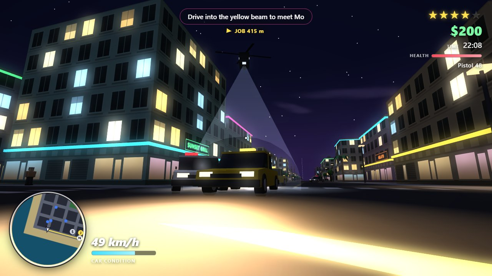

SOL BEACH → MERIDIAN → RUSTPORTNEON
Desktop keyboard and mouse · WebGL · No account
NEON
COAST
Take the muscle car and follow the arrows on the road to your first job. Then drive a cab for fares, buy a place that pays rent, or find out how long you last once the helicopter has its light on you.
Play Neon Coast →Download offlineDesktop keyboard and mouse · WebGL · No account

NEW IN 1.2
More city to live in
- Cab fares. Press T in any yellow City Cab. Fare by distance, a tip for spare seconds, more for each fare in a row.
- Property. Walk into a $ ring and press E. Four places pay rent by the game hour and patch you up.
- Helicopter. From four stars it follows you with a searchlight; a respray still clears it.
- The way there. Arrows in your lane, a line on the minimap, and M for the whole island.
- The harbor courier shift from 1.1 is still on the title screen.